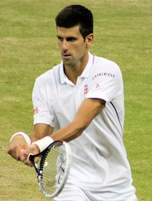

Novak Đoković - Portfolio

Novak Đoković je profesionalni srpski teniser i po ostvarenim rezultatima najbolji teniser svih vremena iz ove zemlje, ali i s područja bivše Jugoslavije. Profesionalno igra od 2003. Osvojio je 11 titula na Grand slam turnirima. Stigao je do finala na 42 turnira Masters serije, od kojih je 29 osvojio (od toga 6 u 2015. godini, što je rekord za jednu sezonu), a ima i 5 titula na Masters Cupu (od čega 4 uzastopno, po čemu je jedini u istoriji). Trenutno je prvi na ATP-listi.
Osim toga, osvojio je bronzanu medalju na OI 2008. u Pekingu. Sa saigračima iz reprezentacije Srbije osvojio je Davis Cup 2010.
Magazin Time uvrstio ga je na svoju listu "100 najuticajnijih ljudi na svetu".